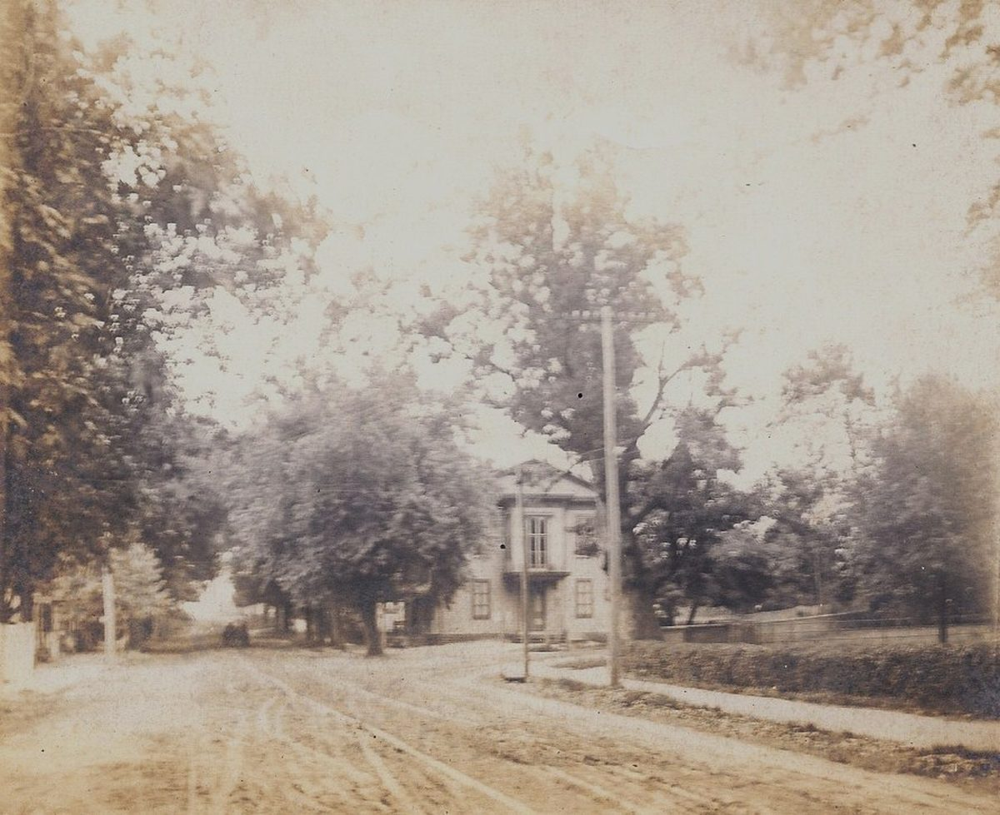
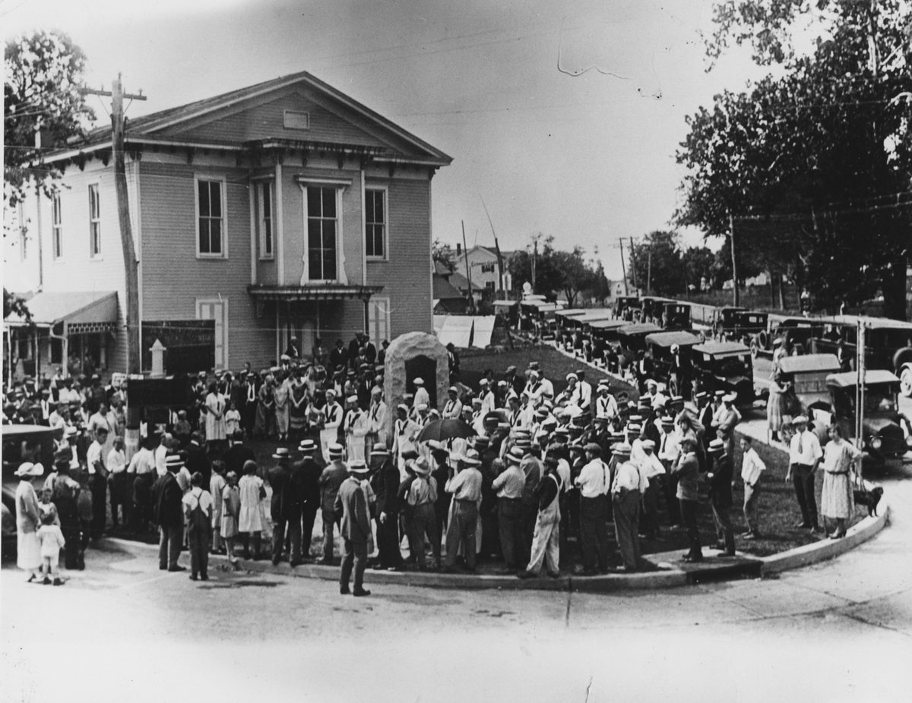
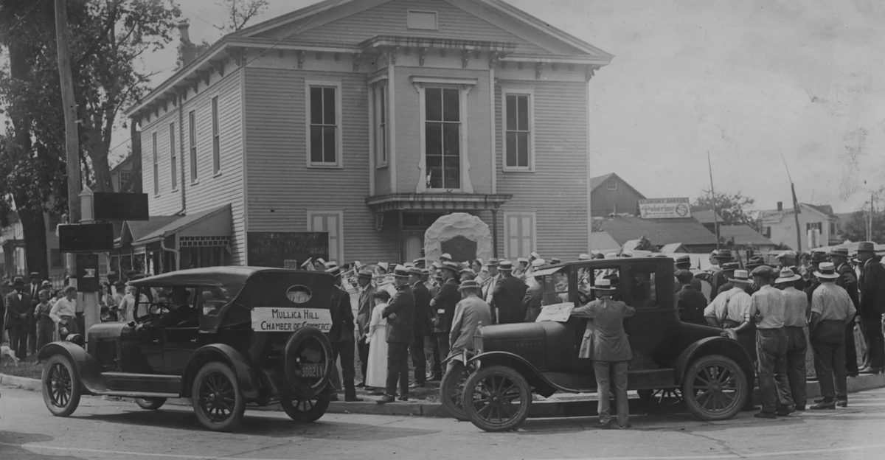
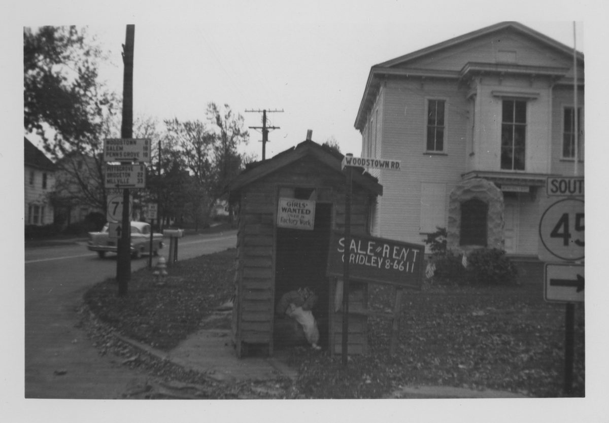
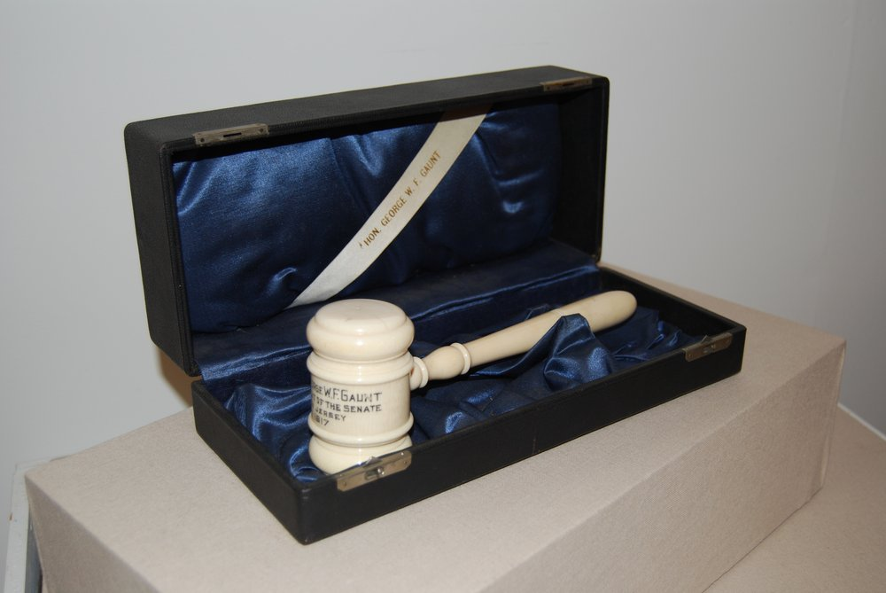
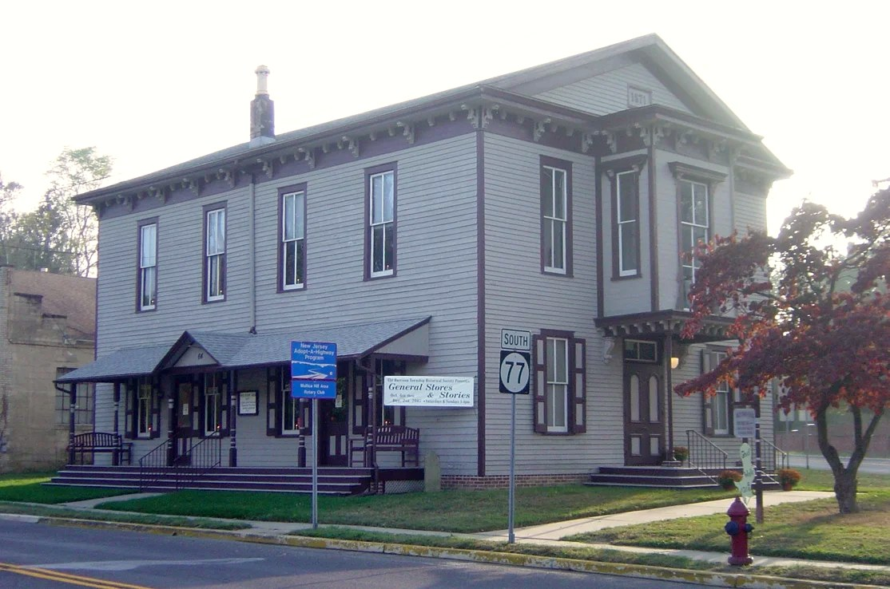

Mullica Hill Historic Walking Tour
Old Town Hall
1871 · 62 South Main Street

In the spring of 1871, a group of Mullica Hill citizens decided the village needed a public meeting hall. None existed. So they pooled their money and built one.
They organized a private stock company called the Town Hall Association and sold shares at five dollars each. Local men supplied everything: oak framing from one neighbor, cedar siding from another, the building itself put up by a local carpenter named Thomas L. Sharp. Total cost ran somewhere between thirty-five hundred and four thousand dollars. The Township of Harrison bought five hundred dollars of shares so it could hold elections and town meetings on the second floor. Twelve years later, in March of 1883, the Township bought out the rest of the stockholders, and the building finally belonged to the public it had been built to serve.
For its first fifty years, the Hall sat closer to Woodstown Road than it does today. In the summer of 1920, the state was widening and paving Woodstown Road, and the Old Town Hall sat directly in the way. The township faced a choice. They could tear the building down. They could bend the road around it. Instead they moved the building. The whole structure was lifted off its foundation, set on rollers, and pushed back from the road to where it stands today. It was forty-nine years old that summer.
The Hall was the site of much more than government meetings during these decades. School graduations happened on the second floor. So did dances, theatrical entertainments, and public lectures. In 1925, Stark Brothers Nursery of Louisiana, Missouri, came here to celebrate the discovery of the Starking apple, a red sport found growing on a tree of otherwise-green apples on a farm a few miles south in Ferrell. Stark Brothers later propagated the variety into one of the dominant commercial apples of the twentieth century. They could have held the ceremony anywhere. They chose this local landmark.



In 1971, the Harrison Township Committee appointed a group of citizens to found the Harrison Township Historical Society specifically to preserve this building, and the Society has occupied it ever since. Inside today is a comprehensive collection of Mullica Hill and Harrison Township artifacts: documents, photographs, household objects, agricultural implements, and pieces of the township's industrial past. The Society's exhibitions have won national and regional awards. The exhibits rotate by season, so a repeat visitor finds something different on each return.


Did You Know
The Town Hall was moved in 1920 without being taken apart. The entire structure was lifted off its foundation and set back from Woodstown Road as one piece, then placed where it stands today.
On the Way
Steps away on Woodstown Road: Waypoint A, The School That Moved →
A short walk away from the village center: Waypoint H, The Spicer House →
Exhibits change with the seasons
The Society mounts free changing exhibitions inside this building each spring and fall, and its monthly meetings are open to anyone. What is on right now, and when the next program is:
While You Are Here
The objects and archives behind these stories live inside Old Town Hall Museum at 62 South Main Street. Admission is free, and current exhibit dates and hours are on the Society's museum page.